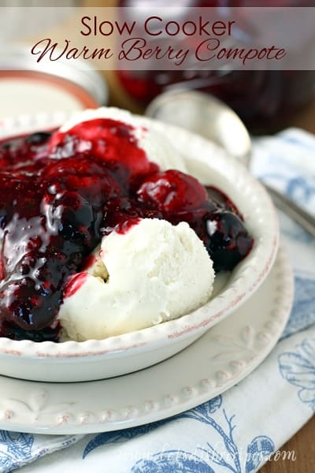

Warm berry compote

Back to other recipes
Ingredients
- 6 cups frozen mixed berries
- ½ cup white sugar
- ¼ cup orange juice
- 1 ½ teaspoons finely grated orange zest
- 2 tablespoons cornstarch
- 2 tablespoons water
Steps
- Stir frozen berries, sugar, orange juice, and orange zest together in a slow cooker. Cover and cook on High until bubbling, about 1 1/2 hours.
- Stir cornstarch and water together in a cup until fully dissolved. Stir into berry mixture. Cover again and cook until thickened, 5 to 10 minutes. Serve warm or at room temperature.
- Enjoy!